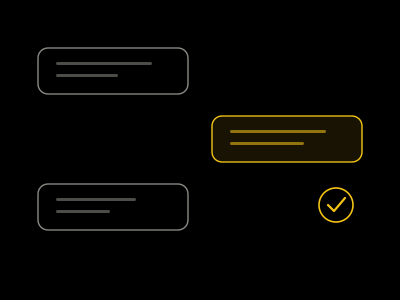
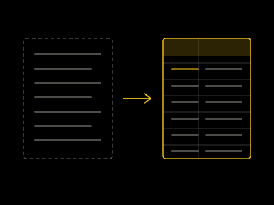
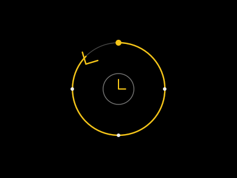
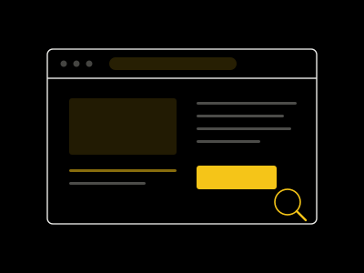
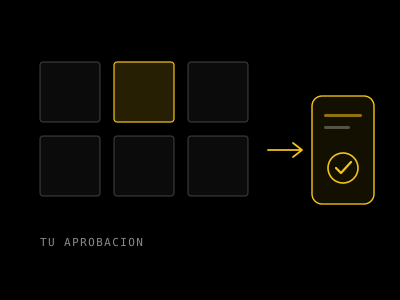
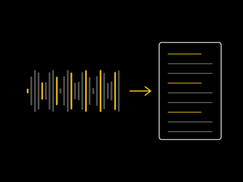
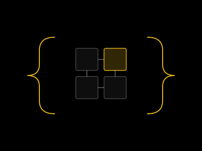
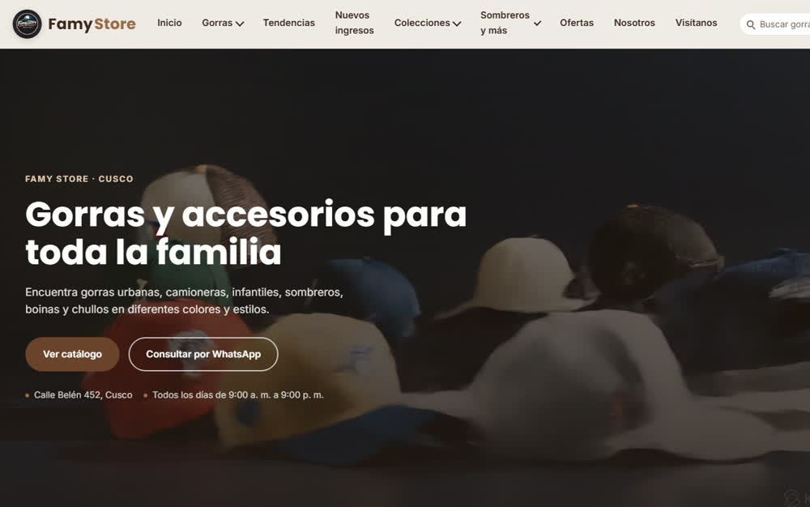

«Me paso el día contestando mensajes.»
Un WhatsApp que atiende, cotiza y agenda solo, las 24 horas. Tú entras cuando hay que cerrar.
Caso: un estudio de tatuajes con dos sedes que agendaba por mensaje directo, a mano.
Probar el botSoy Rodrigo Miranda. Construyo los sistemas que hacen que tu negocio siga funcionando cuando tú no estás encima: bots que atienden, agentes que trabajan solos, bases de datos que recuerdan y webs que te encuentran.
Cusco · Perú
Baja
Un WhatsApp que atiende, cotiza y agenda solo, las 24 horas. Tú entras cuando hay que cerrar.
Caso: un estudio de tatuajes con dos sedes que agendaba por mensaje directo, a mano.
Probar el bot
Una base con tus clientes, su historial y lo que te compraron. Tuya, no de una app que te la alquila.
Caso: doce años de trabajos y precios anotados en papel. Cada cliente que vuelve, empieza de cero.
Ver la demo
Un asistente que hace esa tarea solo, todos los días, y te avisa únicamente cuando algo necesita tu decisión.
Caso: un estudio jurídico. Los plazos corren desde el segundo día hábil y se revisan a mano, uno por uno.
Probar la automatización
Tu web, tu dominio y tu servidor. Que te encuentren cuando te buscan, y que la página sea tuya de verdad.
Caso: una tienda con años de trayectoria que no aparecía en Google. Hoy tiene web propia en producción.
Quiero mi web
Catálogo y publicaciones que salen solas, con tu aprobación por WhatsApp antes de que se publique nada.
Caso: 491 productos con foto, rotando sin que nadie tenga que sentarse a subirlos.
Ver la demo
Todo transcrito, ordenado y buscable. Sin subir tus grabaciones a ningún servicio ajeno: se procesa en tu propia máquina.
Caso: reuniones y clases que se convierten en notas conectadas entre sí, no en carpetas muertas.
Probar el transcriptor
Software y aplicaciones a medida, cuando ninguna herramienta del mercado hace lo que tu negocio necesita.
Detrás: n8n, Go High Level, Claude Code, Python, VPS propio. La herramienta se elige después del problema.
Agendar una llamadaSeis rubros distintos. Y los que vengan.
No vendo cursos ni teoría. Lo que ofrezco es lo que ya tengo corriendo.
Rubros atendidos
Automatizando con n8n
Productos catalogados
Carga del servidor propio
 Rodrigo Miranda · Cusco
Rodrigo Miranda · Cusco
Rodrigo Vicente Miranda Vargas. Llevo dos años automatizando negocios y no vengo del software: vengo de resolverle problemas concretos a gente que conozco.
Mi primer cliente fue la tienda de mi mamá. Después un estudio de tatuajes, un estudio jurídico, una agencia de marketing. Cada uno con un problema distinto y la misma raíz: todo dependía de una sola persona.
Trabajo desde Cusco, con servidor propio, y lo que construyo queda a tu nombre. Si algo no lo sé hacer todavía, te lo digo antes de empezar.
Un tatuador, una tienda de gorras y un estudio jurídico no se parecen en nada. El sistema que necesitan, sí.

Retail · Cusco
Web propia con dominio y HTTPS sobre servidor propio, catálogo de 491 productos y contacto directo a WhatsApp. Antes no aparecía en ninguna búsqueda.
Servicios · dos sedes
Web y agendamiento automático. Lo importante no es el calendario: cada cita agendada arma la base de clientes que hoy vive en un cuaderno.

71 notas · 453 enlaces reales
Ese dibujo no es un adorno: es mi segundo cerebro, generado desde el archivo. Agentes que reportan a horario fijo, transcripción local y reglas de seguridad impuestas por código.
Explicar qué es un agente no sirve de nada. Es más rápido que lo uses. Herramientas gratis, sin registrarte.
Sube un audio y recibe la transcripción con su resumen. El motor ya funciona y corre en local, sin mandar tu grabación a nadie.
Pega la dirección de tu página y recibe qué está fallando: contraste, tamaño de los botones en el celular, peso de las imágenes y si tu código está expuesto.
Reserva una llamada y recibe la confirmación al instante. Es el mismo sistema de agendamiento que instalo en los negocios.

El signo de la marca es la chakana, la cruz andina escalonada — la misma figura de estos muros. Trabajo desde Cusco, y se nota.